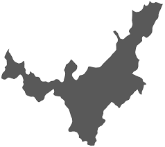

<app-header></app-header>
<div *ngIf="preload" class="row justify-content-center full-height" style="min-height: 100% !important">
    <div class="col-12 center-horizontal-vertical full-height flexbox-col">
        
    </div>
</div>
<div *ngIf="!preload" class="example-container full-height">
    <mat-toolbar>
        <div class="container full-height">
            <div class="row full-height">
                <div class="col content-icon-list d-flex justify-content-start">
                    <button class="icon-btn" mat-button (click)="sidenav.toggle()">
            <i class="fas fa-bars fa-2x"></i>
          </button>
                </div>
                <div class="col content-icon-list d-flex justify-content-around full-height">
                    <div class="container" style="padding-right: 0px !important">
                        <div class="row full-height">
                            <div class="col-8" style="padding-right: 0px !important">
                                <div class="user-name d-flex justify-content-end">
                                    <h3>{{ this.user.username }}</h3>
                                </div>
                            </div>
                            <div class="col-4 d-flex justify-content-end" style="padding-right: 0px !important">
                                <div>
                                    <button class="btn-bell" mat-raised-button matBadge="1" matBadgePosition="before" matBadgeColor="accent" [matBadgeHidden]="hidden" (click)="toggleBadgeVisibility()" style="margin-left: 10px !important">
                    <mat-icon mat-list-icon class="icon-bell">notifications</mat-icon>
                  </button>
                                </div>
                                <div>
                                    <button class="icon-btn full-height center-horizontal-vertical" mat-button [matMenuTriggerFor]="menu">
                    <i class="fas fa-caret-down fa-2x"></i>
                  </button>

                                    <mat-menu #menu="matMenu">
                                        <button class="icon-btn drop-down" mat-menu-item [routerLink]="'/dashboard/my-profile'" (click)="sidenav.close()">
                      Mi perfil
                    </button>
                                        <hr />
                                        <button class="icon-btn drop-down" mat-menu-item (click)="logout()">Cerrar sesión</button>
                                    </mat-menu>
                                </div>
                            </div>
                        </div>
                    </div>
                    <!--


                   -->
                </div>
            </div>
        </div>
    </mat-toolbar>

    <div class="full-height">
        <mat-sidenav-container class="example-sidenav-container full-height">
            <mat-sidenav #sidenav [(opened)]="opened" [fixedInViewport]="true" fixedTopGap="0" [autoFocus]="true" [autoFocus]="false">
                <mat-nav-list>
                    <a mat-list-item routerLink="." class="docger">
                        
                        <strong>DOCGER</strong>
                    </a>

                    <a mat-list-item [routerLink]="'/dashboard/home'" (click)="sidenav.close()">
                        <mat-icon mat-list-icon>home</mat-icon>
                        Inicio
                    </a>
                    <hr />
                    <a mat-list-item (click)="toggleMenuDocuments()">
                        <mat-icon mat-list-icon>description</mat-icon>Documentos
                        <mat-icon *ngIf="!showMenuDocuments">chevron_right</mat-icon>
                        <mat-icon *ngIf="showMenuDocuments">expand_more</mat-icon>
                    </a>
                    <mat-nav-list class="sidenav-submenu" *ngIf="showMenuDocuments" (click)="sidenav.close()">
                        <a mat-list-item [routerLink]="'/dashboard/all'"> Todos</a>
                        <a mat-list-item [routerLink]="'/dashboard/in-process'"> En proceso</a>
                        <a mat-list-item [routerLink]="'/dashboard/resolved'"> Resueltos</a>
                        <a mat-list-item [routerLink]="'/dashboard/finished'"> Finalizados</a>
                        <a mat-list-item [routerLink]="'/dashboard/returned'"> Devueltos</a>
                    </mat-nav-list>
                    <hr />
                    <a *ngIf="isAdmin" mat-list-item (click)="toggleMenuUsers()">
                        <mat-icon mat-list-icon>face</mat-icon> Usuarios
                        <mat-icon *ngIf="!showMenuUsers">chevron_right</mat-icon>
                        <mat-icon *ngIf="showMenuUsers">expand_more</mat-icon>
                    </a>
                    <mat-nav-list class="sidenav-submenu" *ngIf="showMenuUsers" (click)="sidenav.close()">
                        <a mat-list-item [routerLink]="'/dashboard/users'"> Beneficiarios </a>
                        <a mat-list-item [routerLink]="'/dashboard/officers'"> Funcionarios </a>
                    </mat-nav-list>
                    <hr />
                    <a *ngIf="isAdmin" mat-list-item [routerLink]="'/dashboard/dependencies'" (click)="sidenav.close()">
                        <mat-icon mat-list-icon>apartment</mat-icon>
                        Dependencias
                    </a>
                    <hr />
                    <a *ngIf="isAdmin" mat-list-item (click)="toggleMenuReports()">
                        <mat-icon mat-list-icon>bar_chart</mat-icon>Reportes
                        <mat-icon *ngIf="!showMenuReports">chevron_right</mat-icon>
                        <mat-icon *ngIf="showMenuReports">expand_more</mat-icon>
                    </a>
                    <mat-nav-list class="sidenav-submenu" *ngIf="showMenuReports" (click)="sidenav.close()">
                        <a mat-list-item> Gráficas</a>
                        <a mat-list-item> Registros</a>
                    </mat-nav-list>
                </mat-nav-list>
            </mat-sidenav>
            <mat-sidenav-content>
                <div class="container">
                    <div class="full-height">
                        <div>
                            <div class="img-map">
                                
                            </div>
                            <div class="img-flag">
                                
                            </div>
                            <router-outlet></router-outlet>
                        </div>
                    </div>
                </div>
            </mat-sidenav-content>
        </mat-sidenav-container>
    </div>
</div>
<p-toast></p-toast>